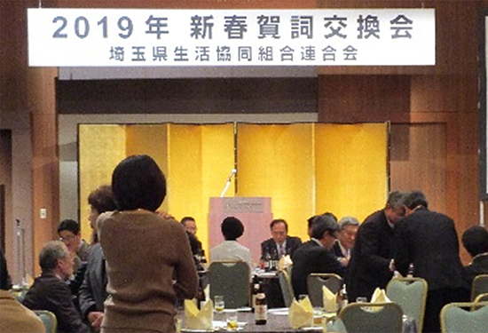
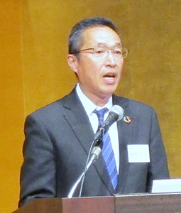
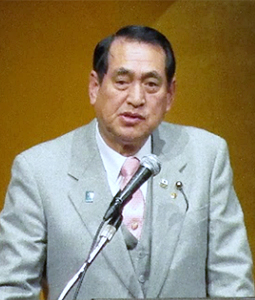
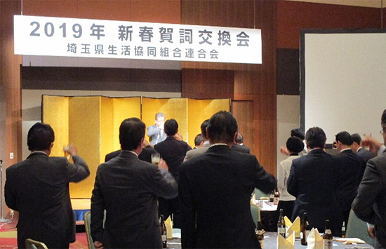
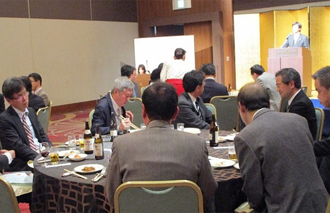
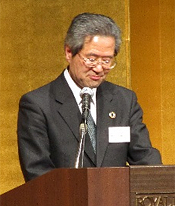

埼玉県生協連2019年新春賀詞交換会を開催しました

1月10日（木）18時より、ロイヤルパインズホテル浦和4階「ロイヤルクラウンA」において、埼玉県生協連「2019年新春賀詞交換会」を開催しました。
各界を代表する65人の皆様にご出席いただき、日ごろのご理解とご協力に感謝申し上げ、懇親を深めました。
主催者あいさつ

主催者を代表して岩岡宏保会長理事あいさつ
主催者を代表して、岩岡宏保埼玉県生協連会長理事がご出席の皆様へお礼を述べるとともに、この1年間、埼玉県生協連が重点課題として掲げ、取り組んできた内容をスライドで報告しました。報告の中では、次年度の活動方針にも触れ、埼玉県内で協同組合連携の取り組みをすすめること、引き続き「核兵器廃絶、平和・憲法の学習」「子どもの貧困や生活困窮者への支援」「消費者被害防止」を重点として取り組むと述べました。
埼玉県知事、埼玉県議会議長、埼玉県議会各会派ごあいさつ
主催者あいさつに続き、ご来賓の皆様からごあいさつをいただきました。上田清司埼玉県知事からは「埼玉県も貧困の連鎖を断ち切るための施策をおこなっている。埼玉県生協連の目指しているものと一致している。一緒に取り組みをすすめていきたい」。齊藤正明埼玉県議会議長からは「昔は地域に助け合いがあり、交流があり、あたたかな地域だった。あらためて地域にあたたかさのある素晴らしい埼玉県を一緒につくっていきましょう」とごあいさつをいただきました。その後、土屋敏夫日本生協連中央地連議長にごあいさつと乾杯の発声をいただき、歓談にはいりました。
上田清司埼玉県知事

齊藤正明埼玉県議会議長
埼玉県議会各会派ごあいさつ、各界ご来賓ごあいさつ
埼玉県議会各会派より、立憲・国民・無所属の会代表 浅野目義英様、公明党議員団 幹事長 蒲生徳明様、日本共産党議員団団長 柳下礼子様、無所属改革の会 木下博信様にごあいさつをいただきました。


各界ご来賓の皆様からは、埼玉県ユニセフ協会会長 山口宏樹様、JA埼玉県中央会専務理事 永島朗様、埼玉消費者被害をなくす会理事長 池本誠司様、埼玉県原爆被害者協議会会長 田中熙巳様より、励ましや期待等のあいさつをいただきました。
閉会あいさつ

大山常務理事より、閉会のあいさつをおこない、盛会のうちに終了しました。